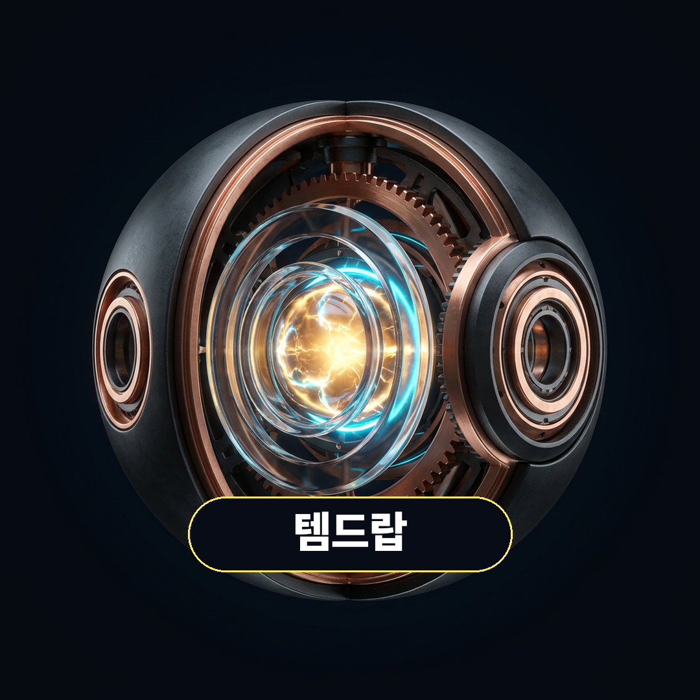

@temdroplab 프로필 이미지
📱 아이폰/모바일 저장 방법
1. 아래 동그란 이미지를
길게 꾹 누르기 → "사진 앱에 저장"
2. 유튜브 앱 내 채널 →
연필 아이콘(채널 수정)
→ 상단 프로필 동그라미 터치 후 저장한 사진 선택
버전 1 · 순수 3D 코어 아이콘 (추천)
원본 PNG 열기 / 다운로드
버전 2 · '템드랍' 워드마크 포함

원본 PNG 열기 / 다운로드